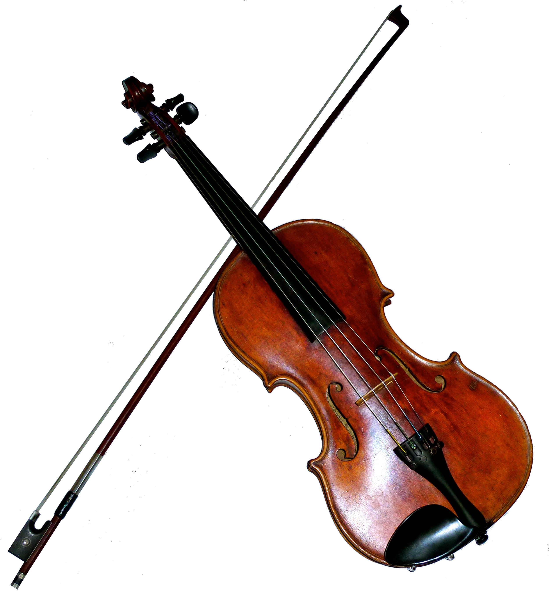
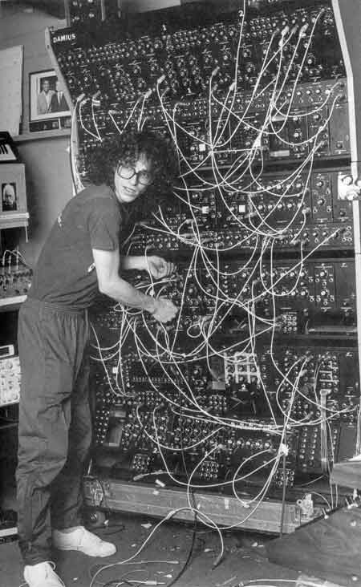
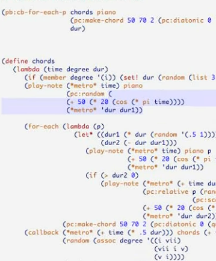
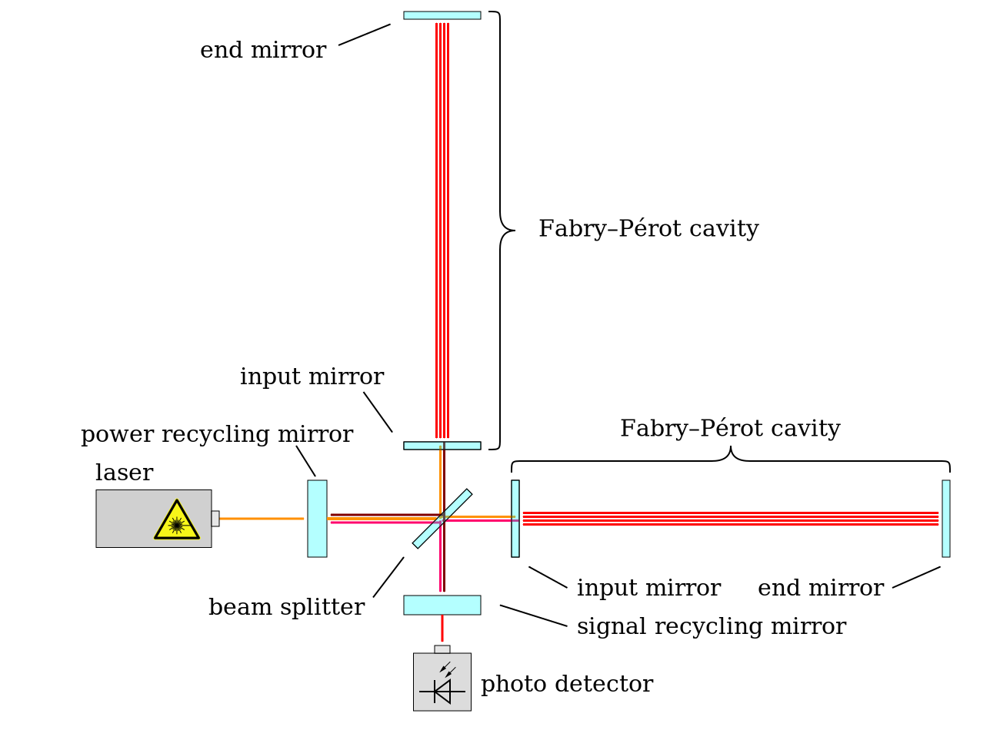
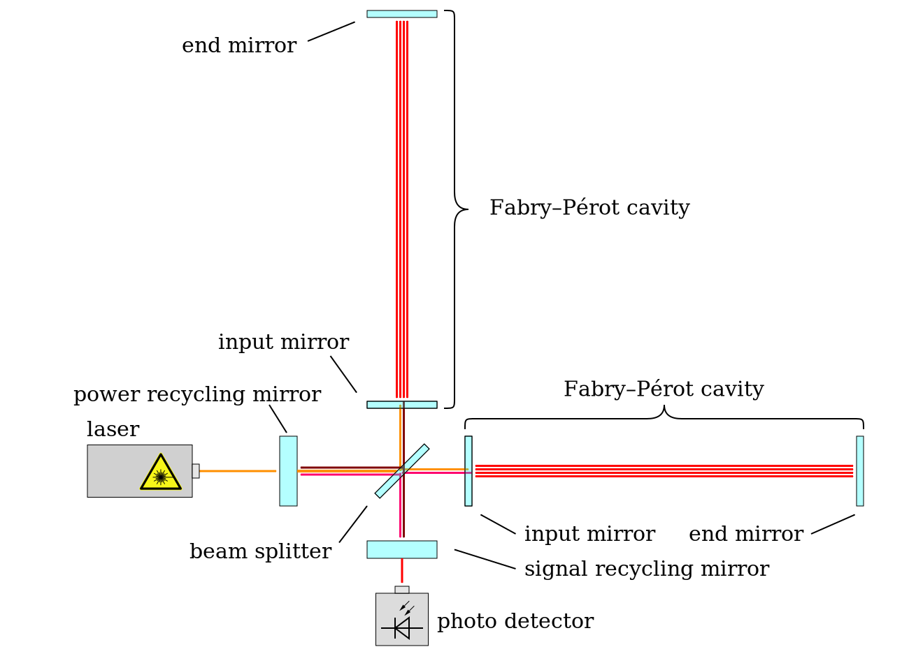
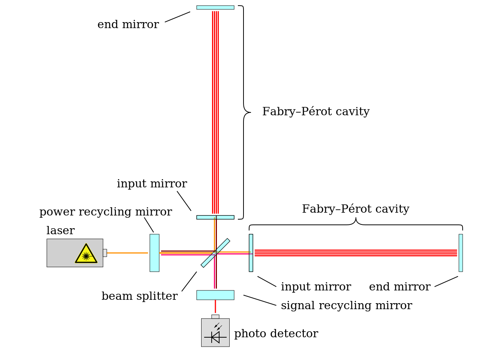
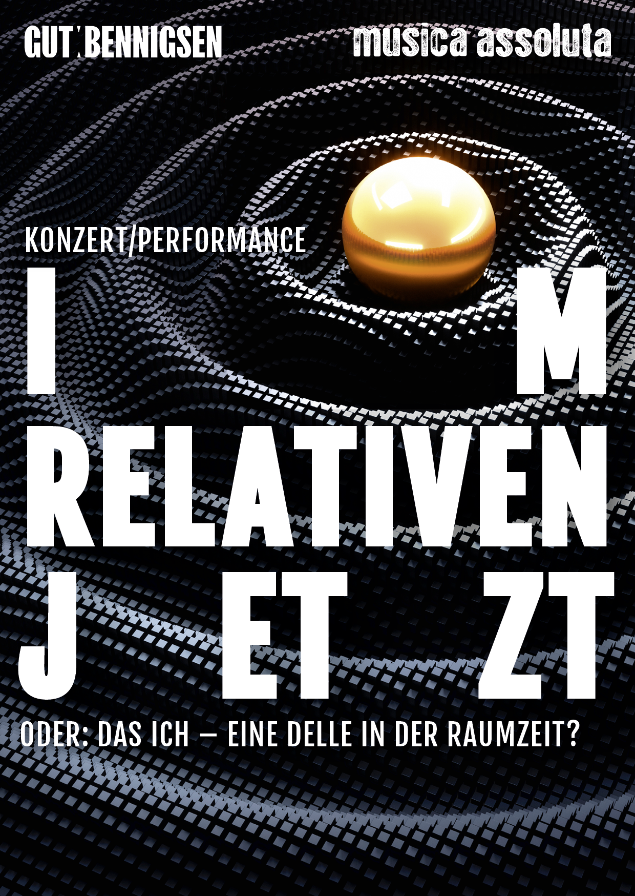

Software als Instrument
harte echtzeit
2024-09-12
Was ist live coding?
allgemein
debugging als Kunstform…
- {Text / code >> Interpreter >> Aktion} => Schleife
- direkte Ausgabe von Musik, Visuals oder physischer Aktion (z.B. MIDI) als Ziel
- Kulturtechnik, kein Genre
- radiakle Offenheit => keine Geheimnisse vor dem Publikum
Beispiel Musik
Beispiel Visuals
Beispiel Tanz
Beispiel Orchester
Musik machen
ein einfaches Beispiel
- browser-basiertes Werkzeug strudel.cc
- gut für den Einstieg -> gute Visualisierungen und keine Installation
Was ist ein Instrument
Klangkörper vs Schnittstelle
- laut Wikipedia "Ein Musikinstrument … ist ein Gegenstand, der mit dem Ziel angefertigt wurde …, um Musik zu erzeugen."
- Vertiefung:
- Klangkörper/-erzeuger: ist der eigentliche Tonerzeuger
- Schnittstelle: ist der Zugang zum Klangerzeuger
- Musiker*in: ist meist der Grund, dass sich ergibt Klangkörper + Schnittstelle = Musik
Instrumente
   [credit 1: Pianoplonkers - Eigenes Werk, CC BY-SA 3.0, Link, credit 2: https://www.flickr.com/photos/jamesthephotographer/ - flickr, CC BY 2.0, Link
 

Sprache/Notation vs Schnittstelle
- Notation = typischerweise getrennt vom Instrument und abstrahiert es teilweise
- Notation = deterministisch + gibt engen Rahmen (Interpretationsspielraum vorhanden)
- Code abstrahiert Instrument und kann sogar mehrere Instrumente gleichzeitig spielen
- Code = Sprache und Notation
- Code = nicht ausschließlich deterministisch + kann sich zur Laufzeit selbst verändern
- These: Code/live coding = Schnittstelle = Sprache = Klangerzeuger (= Musiker)?
Symbiose
Gravitationswellen
Was?
- Störungen in der Raumzeit durch die Beschleunigung großer Massen
- extrem kleine Effekte –> große Laser-Interferometer zur Detektion nötig

[credit 1: NASA/JPL
, credit 2: Menner - Eigenes Werk, based on https://www.ligo.caltech.edu/page/ligos-ifo, CC0, Link]
[credit: B. P. Abbott et al. (LIGO Scientific Collaboration and Virgo Collaboration) Link . See also the associated Jupyter notebook., CC BY 3.0, Link]
Wie wird daraus Musik?

kleines Beispiel extern…
- Ansatz: Gravitationswellen als field recordings bzw. Samples, die assoziationsfrei zu neuen Klangstrukturen zusammengesetzt werden => Inspiration durch musique concrète
- vom Album Ji Kū Kan
Kooperationen
- Konzert des Komponisten Thorsten Encke mit dem Ensemble musica assoluta zur Vertonung von Gravitationswellen (Link)
- aktuell Gespräche über mögliche Kooperation

Links und Refs
Programmiersprachen / Werkzeuge
Organisationen und Weiterführendes
- TOPLAP (the home of live coding - Organisation)
- ALGORAVE (Organisation rave-Genre)
- Kompendium mit Links